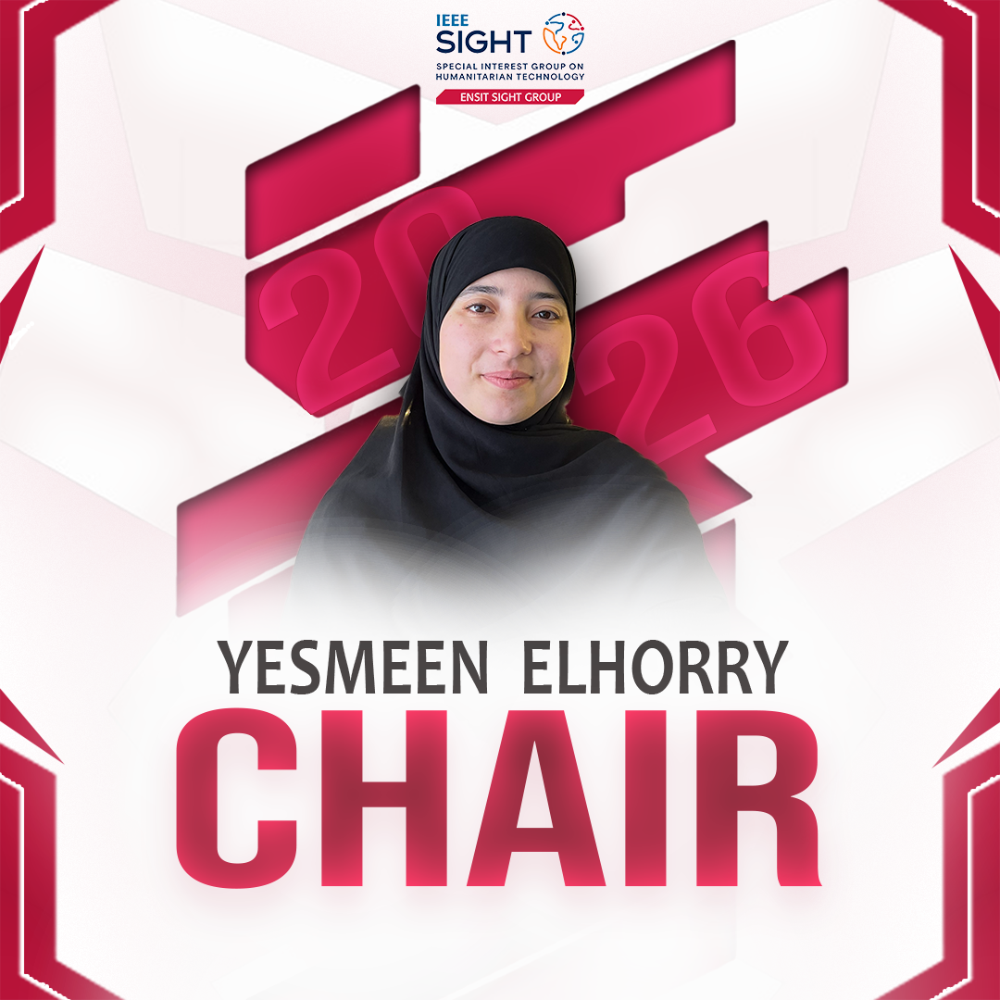
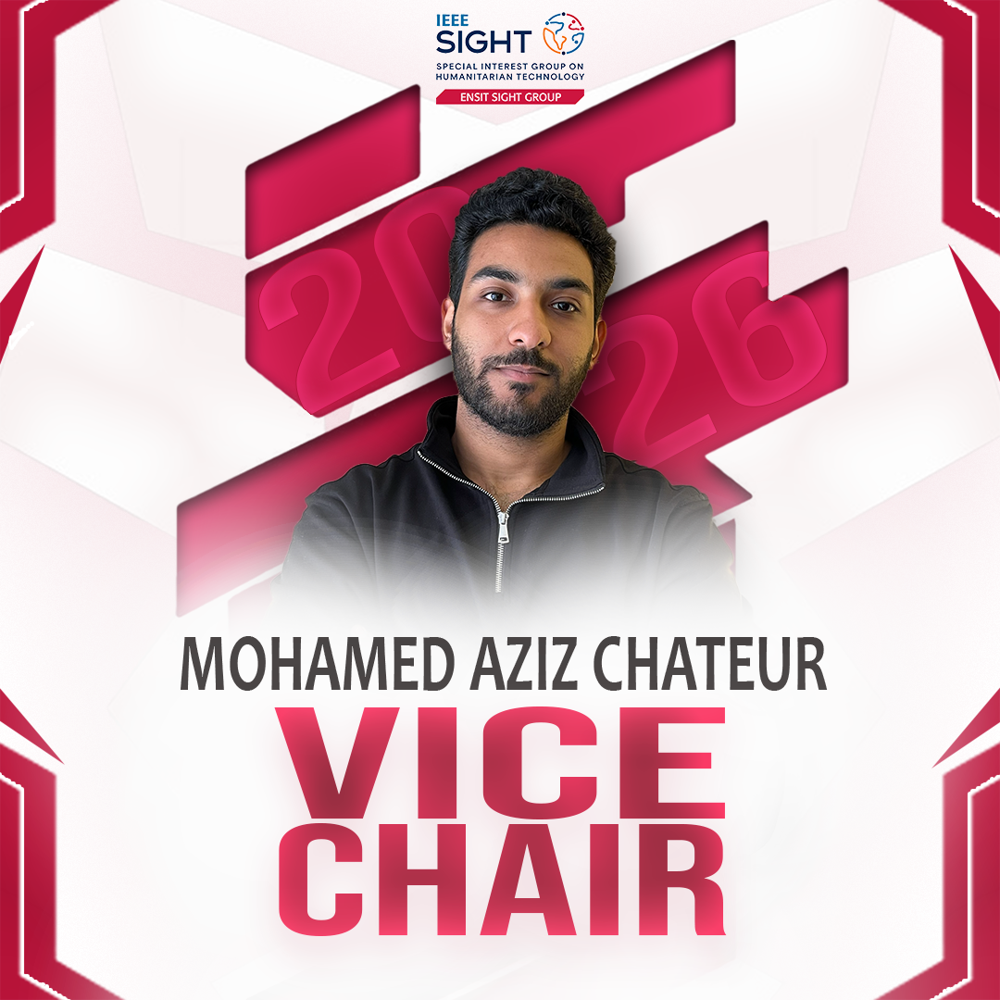
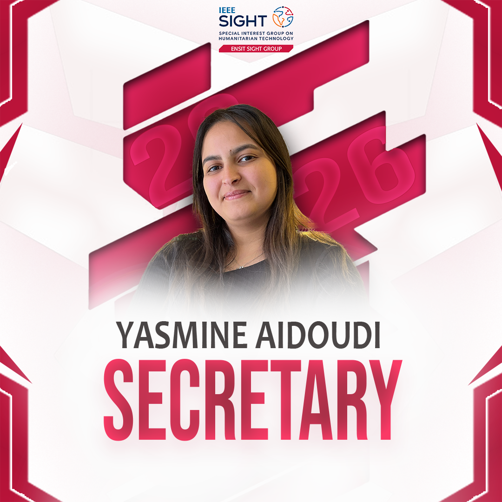
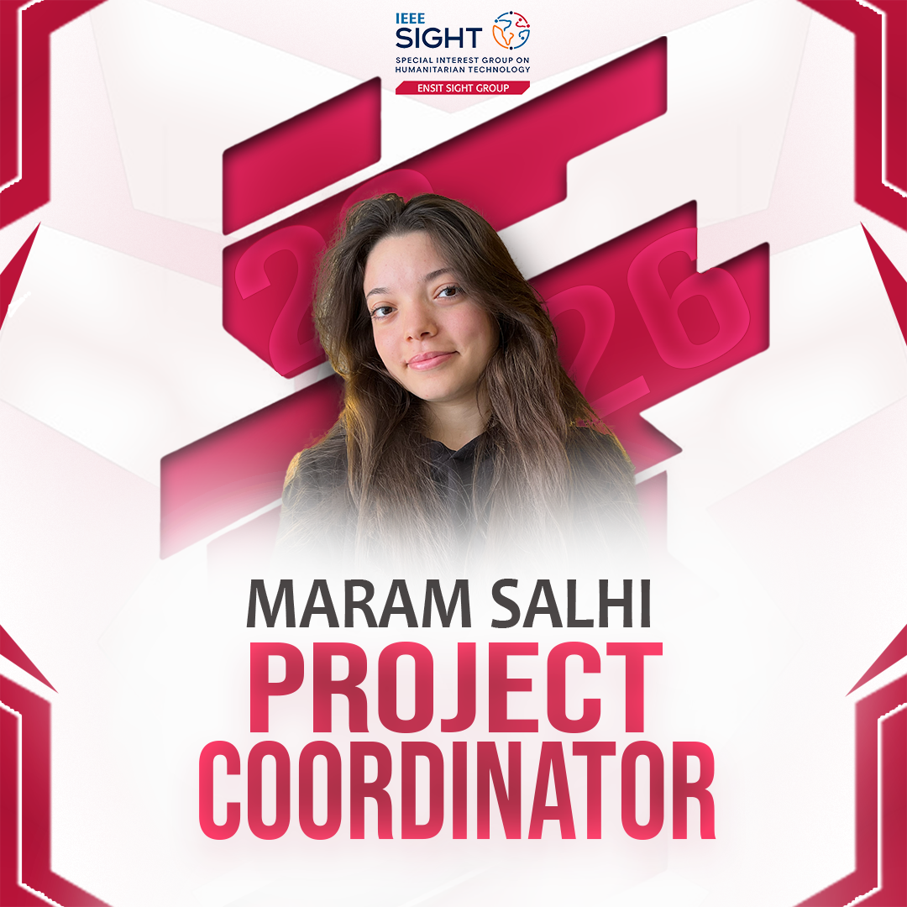
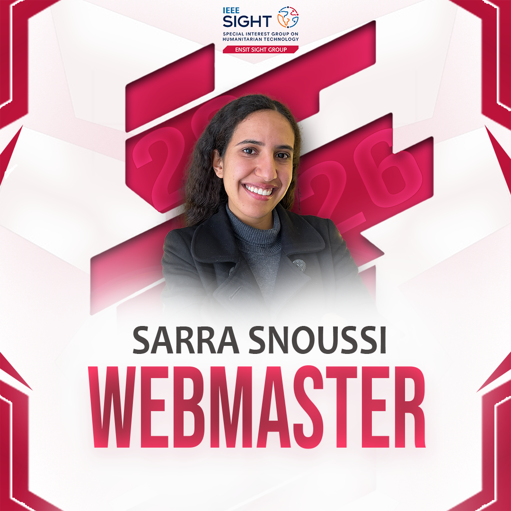

Understand
Listen to communities and learn from local knowledge before designing a solution.
 IEEE ENSIT
IEEE ENSIT
IEEE ENSIT / Special Interest Group
Special Interest Group on Humanitarian Technology
IEEE SIGHT is a global IEEE volunteer network that partners with underserved communities and local organizations to use technology for sustainable development.
Discover SIGHTEngineering for everyone
SIGHT ENSIT brings humanitarian technology to life by connecting engineering students with communities and partners working toward a more sustainable future.
We start by listening, design with empathy, and create practical solutions that respond to real needs. Every project is an opportunity to learn, collaborate, and make a lasting difference.
Our approach
Listen to communities and learn from local knowledge before designing a solution.
Turn engineering skills and creative thinking into technology that meets a real need.
Partner with volunteers, organizations, and communities to create impact together.
Build accessible, responsible projects that can keep serving people over time.
The people behind the impact





Technology in action
From community outreach to humanitarian innovation, our events turn shared knowledge into meaningful action.

Discovering how engineering can respond to human needs.
Read more →
Building safer digital communities through awareness and action.
Read more →
Sharing the SIGHT mission and meeting future changemakers.
Read more →
Connecting first aid, sustainability, and community learning.
Read more →
Making science and exploration accessible to curious young minds.
Read more →
Connecting volunteers with opportunities to create impact.
Read more →